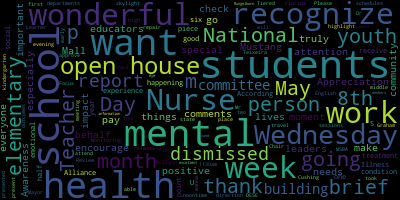
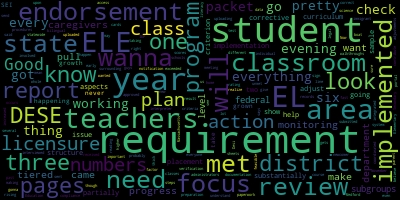
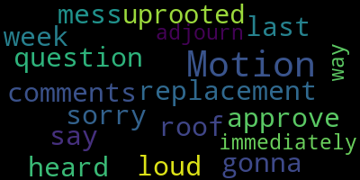

AI-generated transcript of 5.6.2024 Regular School Committee Meeting
English | español | português | 中国人 | kreyol ayisyen | tiếng việt | ខ្មែរ | русский | عربي | 한국인
Back to all transcripts
[Lungo-Koehn]: meeting minutes April 29 2024 motion to approve the consent agenda by member Graham seconded by a second member Bramley all those in favor aye all those opposed motion passes for the consent agenda which was the first item of the May 6 2024 regular meeting 6 p.m. There are no reports of subcommittees. We have reports of superintendent, updates and comments. Dr. Edouard-Vincent.
[Edouard-Vincent]: I have very brief comments. I too just want to recognize our teachers and nurses as this week is Teacher and Nurse Appreciation Week. We want to thank you for all the wonderful work that you do on behalf of our students and that you truly make a positive impact in their lives. Wednesday, May 8th is National School Nurse Day. and just encourage everyone to go check out our Mustang Mall for special things that they have going on. Also, this month is Mental Health Awareness Month, and as school leaders and educators, this is an especially important moment to pay attention to the mental health needs of students and youth in our community. According to the National Alliance on Mental Illness, one in six U.S. youth experience a mental health condition each year, and only half of them receive treatment. So I just want to point that piece out, and I want to recognize the good work that is happening with our mental health and social emotional health departments for our students. I wanna just highlight this week, this Wednesday, May 8th from 1 to 2 p.m. is kindergarten open house. This is in-person open house sessions from 1 to 2 p.m. at all four elementary schools. Please work with your schedules to be able to attend the open houses in person. Also this Wednesday is early release day for all of our students. So again, middle school students are dismissed at 1130am and high school and elementary students are dismissed at noontime. This evening, Mr. Paul Teixeira is going to present a brief report on the outcomes of our English Learner Tiered Focus Monitoring Review that took place by DESE, and there will be two reports presented by Dr. Cushing for the committee to approve an out-of-state travel trip to Florida and a building repair for the skylight at the McGlynn School. I also just want to recognize that we had a wonderful first meeting of our MSBA building committee under the direction of Chair Graham and Mayor Rungelkorn and all the wonderful members that were there. More information is to come, but it was an excellent kickoff. Thank you.
[Lungo-Koehn]: Thank you, Dr. Edward-Vincent. We have our report on English Learner Targeted and Focused Monitoring by Desi, Mr. Paul Taksara, Director of EL. Welcome.
[Teixeira]: Good evening. Good evening, everyone.
[Lungo-Koehn]: Good evening. Or we should just say evening. Just evening tonight.
[Teixeira]: I will be fast. All right. So you guys got a pretty thick packet. We're not gonna go over the whole thing. I sent you the ELE requirements because even though it just says like parent notification, there's like three pages of that. So I just wanted you to understand what the requirements are. on everything that this review does. So it occurs every six year with a three-year check-in. And for the past year, I've been working on this with DESE, uploading, they wanna know our procedures, they wanna see samples of all of the documentation that we send home to caregivers, our report cards, our progress reports, and then they pull individual student records. And they look at, you know, they want to make sure if it's a student who's bilingual who has an IEP that there was an interpreter at their meeting and they, you know, want verification for the sign in sheets and all of this gets uploaded to Desi's portal. It was probably about 1000 pages of paperwork that they got in preparation for this review. They do that every six years. They came to the district, they interviewed caregivers, students, teachers, administrators, and then they did walkthroughs through the classroom. So that's what the tiered focus monitoring is for the EL department. So this is the criteria. There are 12 different areas that they look at. Like I said, each area has subgroups and pretty involved compliance at the federal level and also at the state level. And this is the legal requirement and the implementation. This was a sample just to show you what they look for for one criterion. So upon their review, they give a rating system for each criterion, and then if it's implemented, the requirement's substantially met in all important aspects. If it's partially implemented, the requirement in one or several of those aspects, like the subgroups, may not be met, and then not implemented is the requirement is substantially not met. So we met or exceeded the state and federal implementation requirements in 10 out of 12 focus areas. we received partially implemented in two out of the 12 focus areas. So the two areas we had were ELE program placement and structure, which again, that's like three pages of requirements, and ELE 14, which is the licensure requirements. The program and placement structure was a result of being under 50% for students making progress on the access test. we are at 38%. But I did pull the state data and surrounding districts just to show you we're all in the same boat. We just happen to have a curriculum, I mean, a coordinated program review or a tiered focus monitoring this year, but we are at 38%. Now, I realize we don't wanna be in line with the state, we wanna be higher. So we do have to do corrective action on how we're going to adjust that. And so we did. So this is a report that came out in November 23 about the rising numbers of unmet needs with immigrant newcomer students in Massachusetts. So again, this isn't a Medford issue. It is a statewide issue, but we are taking steps to help course correct with this. So this is the action plan to get us out of corrective action for ELE 5, and I'm not going to go over it because you have it all in your packets. This was submitted to the Department of Elementary and Secondary Education, and they approved this plan as a feasible plan to make the adjustments that we need to. There are a lot of things happening in the district that I do believe will contribute to increased scores. Everything from our new curriculum for early literacy, the science of reading that's happening in the schools, because our EL students are integrated in all of those classes, that will be a factor. in achievement and growth. And then we have the MAP growth, we have DIBLS testing, so we can do our formative assessments and check-ins throughout the year and adjust accordingly. ELE 14 was on licensure requirements. This wasn't licensure for EL, this was a concern with Gen Ed classroom teachers not having the SEI endorsement. So this is a relatively easy fix. Because our numbers have grown dramatically in the last few years, there were many teachers who couldn't take the SEI class because they had to have EL students in their classroom in order to take that class. That was one of the requirements when DESE was offering that. And so if they never had an EL student in their class, they were never flagged with DESE as needing the endorsement. But as our numbers have grown and our EL students are in more and more classrooms, that's what triggered this. And we think we have about 18 teachers who need the endorsement. We're working with principals to get an exact list. And then in the fall, We will work with the teachers to help them get the endorsement that they need. And so by January of 2025, we should be all set. Any questions? Have a great night.
[Lungo-Koehn]: That was the best presentation I think I've ever seen. Thank you. Recommendation to approve basketball trip to Florida, December 2024. How exciting. Dr. Peter Cushing, who will be brief. He's our assistant superintendent of schools.
[Cushing]: Good evening, ladies and gentlemen. Coach DeLuca is also online. We're looking for your approval to take what I believe is a first of its kind in Medford athletic trip to Florida. These are organized by a company out of Florida that provides sanctioned athletic events. That's a critical point with MIA. Coach DeLuca, if you have anything else to add or if there are any questions.
[DeLuca]: Yeah, can you guys hear me? Awesome. So my name is Dominic DeLuca. For those of you that don't know me, I'm the head coach of the girls varsity basketball team at Medford High. And we're looking for final clearance to take my team on a Disney trip where we play in a tournament from December 26th to December 31st. So most importantly, no students will miss any school days and there will be no MIA sanctions if we are approved for this trip.
[Ruseau]: Motion to approve.
[Graham]: Second. Do you want to speak? I just wanted to thank Coach DeLuca. He and I spoke over the weekend. This is a great opportunity for our girls basketball team. Thank you for your tenaciousness and have fun in Disney.
[Lungo-Koehn]: Thank you, Member Graham. Also, I played basketball from Everett High School my whole career and we never went to Disney. Motion for approval by Member, I'm a little upset about this, but Member Ruseau, seconded by Member Graham. All those in favor? All those opposed? Hearing none, motion's approved. Have a blast. Awesome.
[Cushing]: Madam Mayor, we will be looking for chaperones.
[Lungo-Koehn]: You know what? Okay, okay. All right, I do love a good game. Okay, thank you. Recommendation to approve McGlynn Skylight Repair Project. Again, Dr. Peter Cushing.
[Cushing]: So we have six skylights at the McGlynn, there are two over the main lobby, four over the best can be described as around portico through two or three, two floors. into the library. Those have been leaking significantly over the past, I'd say six months or so. We put out an initial request for quotes. It did not appear that the quotes that were sent to us had followed the scope of work that was issued. So we reissued it and the quote that was issued with the initial had met and they are the successful bidder on this. Um, so we have followed all procurement law. We've checked with the city and we're good to go. Just need your approval. Uh, 26,000. Hold on. I just, uh, refresh my memory on the money. We're requesting that this would be through revenue replacement on ARPA through the mayor, a total of $26,800. I've put in a 10% contingency fund. One of the things I've learned working on the McGlynn playground is to have contingency, $2,680 for a total request of $29,480. We could have this done in six weeks. There's a little bit of lead time on the skylights, but they won't really know until they're ordered. So it will be done within four, sorry, within 12 weeks or three months, no matter what.
[Reinfeld]: Motion to approve. I had a question. I'm so sorry.
[Cushing]: This is a short meeting compared to some of our years ago.
[Reinfeld]: Don't say that out loud. So last week we heard comments about roof replacement. This isn't gonna mess with that, or this won't get uprooted immediately with- No, no.
[Cushing]: I mean, the bottom line is the skylights are leaking now. Yes. And a roof replacement is several years away.
[Reinfeld]: But this won't get in the way of that.
[Cushing]: Should not. Great.
[Lungo-Koehn]: We can double check with Facilities and Grounds for the city and Director Hunt, who's doing the roof solar project. Motion for approval by member Rousseau, Graham, who was it? Graham. Graham, seconded by?
[Cushing]: Second.
[Lungo-Koehn]: Member Olapade, all those in favor? Aye. All those opposed, motion is approved.
[Cushing]: Thank you.
[Lungo-Koehn]: Thank you.
[Graham]: Mayor? Member Graham? I'm making a motion to approve 2024-25, 2024-26, and 2024-27. Thank you, Member Graham.
[Lungo-Koehn]: Read them real quick. Yeah, can we hear them? Be it resolved that the Building and Grounds Subcommittee will meet with the Universal Safety Committee to review the recommendations surrounding ADA noncompliance and near-range solutions at Medford High. Be it further resolved that the committee will explore possible grant funding through the Mass Office of Disability or other organizations to engage a licensed ADA contractor and or support remediation efforts. Be it also resolved that the subcommittee will provide a report back to the school committee on progress and plans by October 1st 2024 2024 26 offered by member motion for approval by There's a comment online. I think so. Before we move approval member, um Miss McLaughlin. Name and address for the record, please. And welcome back.
[McLaughlin]: Hello. How are you? Hi everyone, Melanie McLaughlin, Alston Street in Medford Moss. Thank you for giving me a moment. I just wanted to comment on 2024 if I could. And I wanted to thank Member Graham for bringing this to the floor. This is something that I worked on for a couple of years with the Universal Safety Committee and something that I had been really hoping to push forward before my resignation. And so I think this is a really important piece and one that I want folks to consider as you're thinking about the building of the new high school as well. So, you know, while there's a building that we hope is going to be built in the interim, there are a lot of things that are out of compliance with the Americans with Disabilities Act, and that is the access to our building and particularly our high school is really, there's a lot that needs to be done there. We have applied for MOD grant in the past and have not gotten it for a number of reasons. So, can you guys hear me? Hello?
[Lungo-Koehn]: Yes, yes, we can.
[McLaughlin]: Oh, sorry. I was just hearing feedback. So I was just going to say that we have applied for the MOD in the past, and I think that, you know, it's something that needs to be informed, and I would recommend or ask folks if they would consider collaborating with the Disability Commission and or members of the disability community to work on this because I think well-intentioned folks who don't have lived experience with disability can often make errors that are long lasting and I think this is something that you know is long overdue and should be addressed appropriately. So I would ask the committee to please consider perhaps making an amendment to the motion to include disability advocates in the committee, I mean, in the commission, as they evaluate this process with the ADA compliance.
[Lungo-Koehn]: Thank you, Ms. McLaughlin. Thank you. Thank you, Member Graham, for putting this forward. And maybe we can also make sure that city staff and school admin calendar when that grant is open so that we can apply for it accordingly.
[Graham]: Motion to approve with an amendment to include members of the disability community in the meeting and discussions.
[Lungo-Koehn]: Motion for approval as amended by member Graham, seconded by member Intoppa. All those in favor? Aye. All those opposed? Motion passes. 2024-26 offered by member Rousseau, update policy BEDB, agenda creation and format for regular meetings of the school committee by inserting this meeting is being recorded in bold immediately after existing policy language in person at the name of location only. Motion for approval by member Graham, seconded by?
[Graham]: Second.
[Lungo-Koehn]: Member Olapade, all those in favor? Aye. Opposed? Motion passes.
[Ruseau]: Motion to suspend Rule 46 requiring a second reading of 2024-26.
[Lungo-Koehn]: Motion seconded by Member Ruseau, seconded by Member Graham. All those in favor? Aye. All those opposed? Motion passes. Offered by Member Ruseau.
[Ruseau]: Mayor, sorry. That motion to, do we then have to actually motion to approve the policy?
[Lungo-Koehn]: Yeah.
[Ruseau]: Because we're not having the second reading. I think we have to then Motion to approve.
[Lungo-Koehn]: Motion to approve the policy.
[Ruseau]: Yes.
[Lungo-Koehn]: That's our third vote by Member Ruseau, seconded by Member Graham. All those in favor? Aye. All those opposed? Motion passes. 2024-27 offered by member Rousseau. Policy BEDB agenda creation and format for regular meetings of the school committee will be updated by inserting approvals of capital purchases immediately after existing policy language, approval of bills, and the consent agenda section of the policy. Motion to approve.
[Ruseau]: Second. You want me to speak on that, Mayor?
[Lungo-Koehn]: if you could explain, yeah.
[Ruseau]: Sure. So we have our consent agenda and in the policy that explains what's allowed to be in there, it has, well, I don't have the full set. There's a list, a laundry list of things we allow to be in a consent agenda. And as we have discussed, well, I mean, last week, we actually accidentally had them in the consent agenda, but this just simply adds the approvals of capital purchases. So in our last meeting, we talked about how we wanna be approving them, And then I got a question from an administrator about, so how do you do that? Do we have to come here and do a whole song and dance every time we wanna buy a new skylight to replace something leaking? And I don't think the intent of this committee is that we have a song and dance every time we have to replace the skylight. any of these approvals that are capital purchases, so we're not actually funding them, but the city is, but the assumption is the administration has already talked to the city and the city said, yes, we'll pay for it.
[Lungo-Koehn]: Yeah, as long as we make sure that the administration talks to the city staff, especially where ARPA is, it is accounted for, especially with the air conditioning, reconditioning study, turnout gear, it's accounted for.
[Ruseau]: And we can just sever anything we actually need to discuss for real. But it just seemed like, you know, we already had one tonight. And I think actually last week after we had talked about this, there was another one as well. So it's just like, when we don't really think we need to talk about it, a consent agenda sounds great. So that's about it.
[Lungo-Koehn]: Motion for approval by Member Graham, seconded by Member Ruseau. All those in favor? Aye. All those opposed? Motion passes.
[Ruseau]: May I make the song and dance again? Motion to suspend the second reading, rule 49.
[Lungo-Koehn]: Motion to suspend the second reading by Member Ruseau, seconded by? Second. Member Graham, all those in favor?
[Ruseau]: Aye.
[Lungo-Koehn]: All those opposed?
[Ruseau]: Motion to approve the updated BEDB policy.
[Lungo-Koehn]: Motion to approve the 2024-27 policy by Member Bruce So, seconded by Member Graham. All those in favor?
[Edouard-Vincent]: Aye.
[Lungo-Koehn]: All those opposed? Motion passes. We have one condolence. The members of the Medford School Committee express their sincere condolences to the family of Robert D. Kane, English teacher and guidance Councilor at the former Roberts Junior High. Additionally, he served as director of the Medford Summer School Program. I'll rise for a moment of silence. Thank you. Our next regular meeting is May 20th, 2024 here at the Alden Memorial Chambers, Medford City Hall in addition to Zoom.
[Reinfeld]: Motion to adjourn?
[Lungo-Koehn]: Second.
Lungo-Koehn
total time: 5.8 minutes
total words: 794

|
Edouard-Vincent
total time: 2.67 minutes
total words: 364

|
Teixeira
total time: 5.85 minutes
total words: 869

|
Ruseau
total time: 1.69 minutes
total words: 339
|
Graham
total time: 0.41 minutes
total words: 76
|
Reinfeld
total time: 0.37 minutes
total words: 51

|
McLaughlin
total time: 1.98 minutes
total words: 328

|
|
|
|
|
|
|
|
|
|
|
|
Back to all transcripts
{kind=link}
{kind=link}
{kind=link}
{kind=link}
{kind=link}